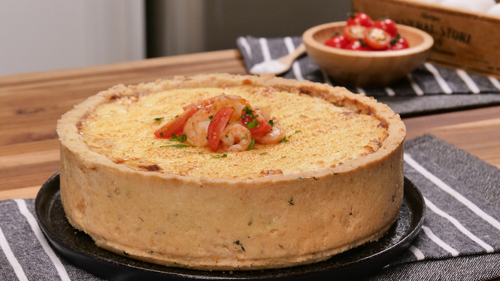

Torta de Camarão
Em um bowl, adicione a farinha de trigo, a manteiga gelada, a gema do ovo e o tomilho, Misture tudo até formar uma massa quebradiça. Em uma forma de fundo falso, de 16 cm, redonda, adicione a massa e leve para pré-assar por 10 minutos. Retire do forno e reserve. Em uma panela, adicione a manteiga, a cebola picada, e o alho e refogue Adicione os tomates picados e em seguida o camarão Refogue por 5 minutos e retire alguns camarões para decoração. Em seguida, adicione o creme de leite e o requeijão Desligue o fogo e adicione 1 ovo e o parmesão Tempere com sal e pimenta-do-reino. Este conteúdo é um pouco mais longo.
Bolo de Cenoura
O primeiro passo desse bolo de cenoura é, em um liquidificador, bater os ovos com açúcar por aproximadamente 3 minutos. Enquanto isso acrescente o óleo em fio pelo buraco no topo do liquidificador. Receita de Bolo de cenoura simples de liquidificador ... Depois disso seu bolo de cenoura simples de liquidificador está pronto! Espere esfriar antes de cortar e delicie-se com esse lanche incrível. Para tornar ainda mais saboroso prepare uma cobertura de chocolate com creme de leite ou decore com buttercream simples. Este conteúdo é um pouco mais longo.
Pavê de Limão

Bata no liquidificador o leite condensado, o creme de leite e o suco de limão até obter uma consistência cremosa. Molhe os biscoitos rapidamente no leite de vaca e forre em um recipiente de vidro até preencher todo o fundo. Despeje o creme sobre os biscoitos e forre mais uma camada de biscoitos. Repita o processo até preencher todo o recipiente. Leve à geladeira por 5 horas. Este conteúdo é um pouco mais longo.